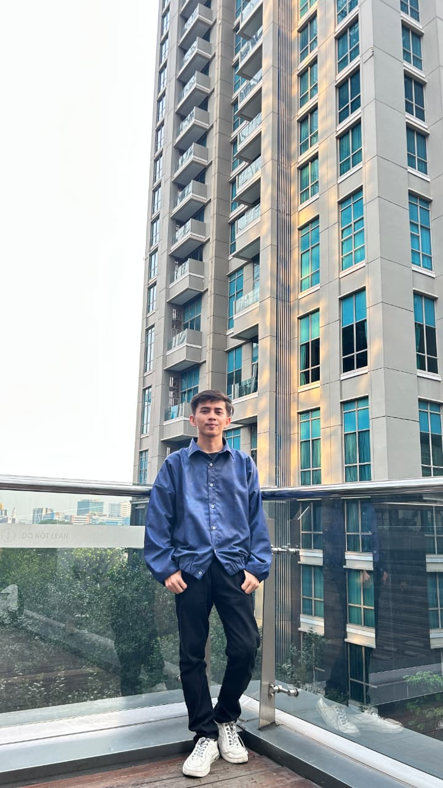

Vendor Management &
Civil Engineering
Internship
Managing Vendor Documentation, Project Administration, Technical Learning, and Engineering Development.
Vendor Management
Project Documentation
BIM Learning
Civil Engineering
Jeri Marlian
•
PT Era Bangun Jaya
•
Batch 2 Internship

"Learning by doing through real project experience."
— Internship Journey 2026Thank You for Reviewing My Internship Portfolio

Scan to visit portfolio